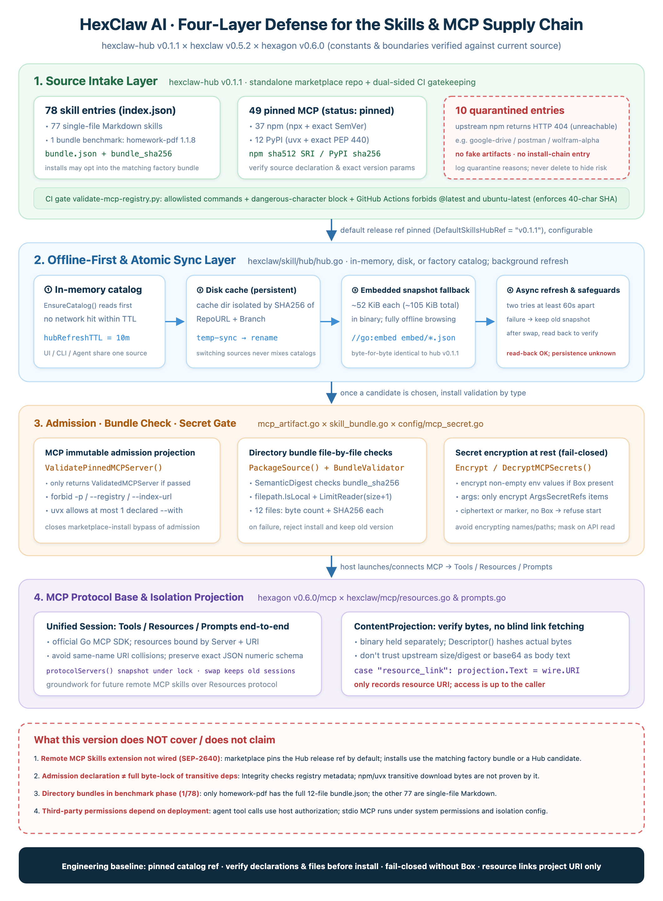
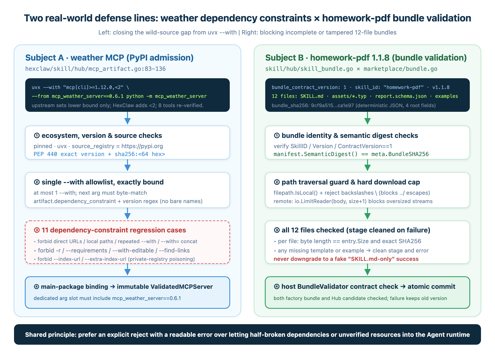

78 Skill × 59 MCP (49 قۇلۇپلانغان، 10 ئايرىۋېتىلگەن) × --with بېقىندىلىق ئاق تىزىملىكى × تورسىز BOM ۋە مەخپىي ئۇچۇر fail-closed
بۇ ھەپتىنىڭ سەيشەنبە كۈنى (24-نويابىر)، MCP نىڭ ئىككى يىللىقى خاتىرىلەنگەن ھەپتىدە، Anthropic Skills over MCP نى ئاشكارا Beta غا چىقاردى. ئالدى بىلەن ئاسان خاتا چۈشىنىلىدىغان سۆزنى ئېنىقلاپ ئۆتەيلى: HTTP over TLS غا ئوخشاش، بۇ يەردىكى over «MCP كېلىشىمى ئارقىلىق Skill نى سىرتقا تارقىتىش»نى كۆرسىتىدۇ — مۇلازىمېتىر تەرەپ خىزمەت ئېقىمىنى ئېلان قىلىدۇ، خېرىدار تەرەپ ئېھتىياجلىق بولغاندا SKILL.md ۋە قوشۇمچە ھۆججەتلەرنى ئوقۇيدۇ.
ئېلان قىلىنغان چۈشەندۈرۈشنى ئوقۇغاندا، بىر ئالماشتۇرغۇچ (switch) تەپسىلاتى ئالاھىدە دىققەت قىلىشقا ئەرزىيدۇ. 24-نويابىردىكى ئۇقتۇرۇشقا ئاساسەن، شەخسىي پىلانلار (Pro / Max / Ultra) سۈكۈت بويىچە ئېچىلغان، Team نى باشقۇرغۇچى ئاچقۇزۇشى كېرەك، Enterprise بولسا شۇ چاغدا تېخى ئېچىلمىغانىدى. قوراللار ئۆزىنىڭ «مەشغۇلات سىنارىيەسى»نى ئېلىپ كەلگەندىن كېيىن، قايسى نەشرنى ئىشلىتىش ھوقۇقى يەنىلا ساھىب سىستېمىدا.
بۇ توسما قانچىلىك مۇھىملىقىنى بىز HexClaw نىڭ 59 MCP بازار تۈرىنى رەتلەۋاتقاندا ئۆز كۆزىمىز بىلەن كۆرگەنىدۇق. تۈرلەر ئېلان قىلغان بوغچا نامىنى npm نىڭ رەسمىي مەنبەسىگە سېلىشتۇرۇپ تەكشۈرگەندە، 10 ى HTTP 404 قايتۇرغان. google-drive، postman، wolfram-alpha، ffmpeg-video-processor شۇ چاغدا كاتالوگقا خاتىرىلەنگەن نامlar ئىدى. تەسەۋۋۇر قىلىپ بېقىڭ: يەرلىك Agent قا ئاسانلا @latest بەلگىلەپ قويسىڭىز، كېيىنكى قوزغىتىشتا ئېرىشكەن بايتلار ئاللىبۇرۇن باشقا نەشرگە ئالماشقان بولىشى مۇمكىن.
قورالنى ئۇلاشنىڭ ئۆزى بۇرۇنلا قىيىن ئەمەس، SDK ئوراش ئىشى بارغانسېرى قولايلىشىۋاتىدۇ؛ ھەقىقىي قىيىن بولغىنى — ئىقتىدار بازىرى بارغانسېرى چوڭايغاندىن كېيىن، Agent ىڭىزنىڭ ھەر خىل «ياۋا بوغچا» ۋە ئۆزگىرىپ تۇرىدىغان سىنارىيەلەر ئىچىدە يالىڭاچ يۈگۈرۈپ كېتىشىنىڭ ئالدىنى ئېلىشتۇر.
بۇ ماقالىنىڭ ئاساسىي قارىشى:
1. Skills over MCP تەكشۈرۈش دائىرىسىنى قورال چۈشەندۈرۈشىدىن يىراقتىكى سىنارىيەگىچە كېڭەيتتى. تۇراقلىق تىزىملىكى بار Skill لارنىڭ ھۆججەت خۇلاسىسى تەكشۈرۈلۈشى كېرەك. ساھىب سىستېما يەنە قايسى نەشرلىك سىنارىيەنى قوبۇل قىلىشنى قارار قىلىدۇ، يەرلىك بېقىندىلىقلارنىڭ قەيەردىن كېلىشى بولسا ئورنىتىش زەنجىرىگە باغلىق.
2. يەرلىك بازارنىڭ كىرىش دەلىللەشى چوقۇم تىپ سىستېمىسى ۋە CI نىڭ ھەر ئىككى تەرىپىگە مۇستەھكەم ئورنىتىلىشى كېرەك. HexClaw بازىرىدا 49 قۇلۇپلانغان MCP تۈرى ئېنىق نەشر، رەسمىي registry نىڭ مەنبە ئېلانى ۋە ھاش مېتا ئۇچۇرىنى خاتىرىلەيدۇ. 10 تۈر بوغچا نامى سورىغاندا 404 قايتۇرغانلىقى ئۈچۈن quarantined قاتارىغا كىرگۈزۈلگەن. PyPI ھەر بىر تۈرگە ئەڭ كۆپ بىر گۇرۇپپا ئېلان قىلىنغان --with رۇخسەت قىلىدۇ، Skill كاتالوگ بوغچىسى تىزىملىك بويىچە 12 ھۆججەتنى بىر-بىرلەپ تەكشۈرىدۇ.
3. ئېلان قىلىنغان نەقىل ۋە تورسىز ساقلانما نۇسخا، ئۈستەل يۈزى دېتالىنىڭ قولىدىكى كاتالوگنىڭ قايسى نەشرلىك ئىكەنلىكىنى بىلىشىگە ياردەم بېرىدۇ. كىرىش دەلىللەش ئاساسىي بوغچىنىڭ نەشرى ۋە ئېلانىنى تەكشۈرەلەيدۇ؛ بوغچا باشقۇرغۇچىنىڭ ئەمەلىيەتتە قايسى مەھسۇلاتنى چۈشۈرگەنلىكى ۋە قايسى يۆتكەلمە بېقىندىلىقلارنى پارسلىغانلىقى شۇ قېتىملىق ئورنىتىش خاتىرىسىگە قاراش كېرەك.
30 سېكۇنتلۇق نۇسخا:
بۇ ماقالە Anthropic نىڭ Skills over MCP (SEP-2640) كېڭەيتىلمىسىگە سېلىشتۇرۇپ، HexClaw نىڭ (
hexclaw-hub v0.1.1+hexclaw v0.5.2+hexagon v0.6.0) ئۈچ گۇرۇپپا ھەقىقىي ئوبيېكت ئارقىلىق تەمىنات زەنجىرى مۇداپىئە لېنىيەسىنى قانداق ئىشقا ئاشۇرغانلىقىنى پارچىلايدۇ: 404 سەۋەبىدىن ئايرىۋېتىلگەن 10 MCP تۈرى،weatherنىڭ PyPI--withيەككە بېقىندىلىق چەكلىمىسى، شۇنداقلاhomework-pdf 1.1.8نىڭ 12 ھۆججەتلىك SHA256 كاتالوگ بوغچىسى؛ ئاندىن تورسىز كاتالوگ يېڭىلاش، مەخپىي ئۇچۇر قۇتىسى fail-closed ۋە ئاستىنقى قەۋەتتىكى MCP Resources/Prompts كۆپ ۋاسىتىلىك ئايرىشقا يىغىنچاقلىنىدۇ. شۇ بىلەن بىللە ئېنىق ئېيتىپ قويىمىز: HexClaw بازىرى سۈكۈت بويىچە Hub نىڭ نەشر Tag ىغا قۇلۇپلانغان، MCP نىڭ يىراقتىكى Skills كېڭەيتىلمىسى (skills/listقاتارلىقلار) تېخى ئۇلانمىغان.
Skills over MCP يولغا قويۇلغاندىن كېيىن، ئىشەنچ دائىرىسى زادى قەيەردە كېڭەيدى؟
يېقىنقى بىر ئايلىق كەسىپ ۋاقىت جەدۋىلىنى تۇتاشتۇرۇپ قارىساق، يۆنىلىش ئېنىق. 2026-يىلى 22-ئۆكتەبىردە، Linux فوندى جەمئىيىتىگە قاراشلىق Agentic AI Foundation (AAIF) Agent Skills نى رەسمىي باشقۇرۇشقا كىرگۈزۈپ، ئۇنى MCP بىلەن ئوخشاش بىر ئوچۇق ئۆلچەم خەرىتىسىگە قويدى؛ ئارقىدىن 24-نويابىردا Anthropic Skills over MCP نى (ئۆلچەم نومۇرى SEP-2640، io.modelcontextprotocol/skills) ئېلان قىلىپ، Shopify، HubSpot، Atlassian قاتارلىق تۇنجى تۈركۈمدىكى ئېكولوگىيەلىك مۇلازىمەتلەر بىلەن Claude ۋە Claude Code (2.1.331+) دە ئاشكارا سىناق باشلىدى.
بۇ لايىھە ھەقىقىي بىر ئاغرىق نۇقتىسىنى كۆزدە تۇتقان. دەسلەپكى MCP ئۇلاش خۇددى سىزگە بىر قۇتا بۇراما تېەچكىسى بېرىپ، قۇراشتۇرۇش سىزمىسىنى بەرمىگەنگە ئوخشايتتى: بەزى خېرىدارلار بىر قېتىمدا ئونلاپ قورالنىڭ JSON Schema ىنى context قا قۇيۇۋېتىدۇ، ھەم Token كۆيدۈرىدۇ، ھەم مودېلنى پارامېتىر تەپسىلاتلىرى ئىچىدە ئاداشتۇرۇۋېتىدۇ. Skills over MCP نىڭ ھەل قىلىشى ناھايىتى تېجەشلىك — خېرىدار تەرەپ ئاۋۋال يېنىك مېتا ئۇچۇر ئېغىزلىرى (skills/list، skills/get) ئارقىلىق قايسى Skill لارنىڭ بارلىقىنى كۆرىدۇ؛ ئەمەلىي ئىشقا دۇچار بولغاندا، MCP نىڭ ئەسلىدىكى Resources ئېغىزىدىن پايدىلىنىپ SKILL.md ۋە قوشۇمچە ھۆججەتلەرنى ئېھتىياجغا قاراپ ئوقۇيدۇ. مۇلازىمېتىر تەرەپ سىنارىيەنى يېڭىلىيالايدۇ، خېرىدار تەرەپ يېڭى نەشرنى بايقىغاندىن كېيىن ساھىبنىڭ تەكشۈرۈش ۋە تەستىقلاش قائىدىسى بويىچە يۈكلەيدۇ. كەسىپتە بۇ ئۇسۇلنى تەدرىجىي ئاشكارىلاش (Progressive Disclosure) دەپ ئاتايدۇ؛ ئىشلىتىلمىگەن Skill نىڭ تېكىستى context نى ئىگىلىمەيدۇ.
مەسىلە تەڭگىنىڭ يەنە بىر تەرىپىدە. 2025-يىلى ئاپرېلدا، بىخەتەرلىك تەتقىقات گۇرۇپپىسى Invariant Labs MCP Tool Poisoning (قورال زەھەرلەش) ۋە Rug-Pull (گىلەمنى تارتىۋېلىش) نى ئاشكارىلىغانىدى. ئۇ چاغدا تەكشۈرۈشكە تېگىشلىكى قورال چۈشەندۈرۈشى ۋە ئۇنىڭ ئۆزگىرىشى ئىدى. ھازىر قورالنىڭ يېنىغا بىر سىنارىيە قوشۇلدى، ساھىبنىڭ تەكشۈرىدىغان مەزمۇنىمۇ Skill تېكىستى ۋە قوشۇمچە ھۆججەتلەرگىچە كېڭەيدى.
ئادىل ئېيتقاندا، Anthropic ئۆزىمۇ يالىڭاچ قويمىدى. SEP-2640 بويىچە، تۇراقلىق تىزىملىكى بار Skill لار ھۆججەت URI ى، بايت سانى ۋە SHA-256 نى تىزىپ بېرىدۇ. ھەرىكەتچان بايلىققا يولۇققاندا، ئىلگىرىكى تەستىق كېيىن خالىغانچە ھاسىل قىلىنغان ھۆججەتلەرنى قاپلىيالمايدۇ. Claude Code Manual ۋە acceptEdits ھالىتىدە Allow this version نى تەمىنلەيدۇ، تەستىق شۇ نەشرلىك ھۆججەتكە ئەگىشىدۇ. auto ھالىتىدە بولسا تۈرگە ئايرىغۇچى يۈكلەش-يۈكلەمەسلىككە ھۆكۈم قىلىدۇ. Claude Code يىراقتىكى MCP Skill نىڭ ئىچكى shell بۇيرۇقىنى ئاتلاپ ئۆتىدۇ. v2.1.332 دە قوشۇلغان PreSkillShellCommand قىستۇرمىسى ئىجرا قىلىنىش ئالدىدىكى ئىچكى بۇيرۇققا ئىشلىتىلىدۇ. ئەمما قانداق قىلىپ يەرلىككە ئۈچىنچى تەرەپ MCP ئورنىتىش، تور ئۈزۈلگەندە كاتالوگنى كۆرۈش، پارولنى قانداق دىسكىغا يېزىش — بۇلار يەنىلا ساھىبنىڭ ئۆز ئەمەلىيلەشتۈرۈشىگە باغلىق.
شۇڭا بىز HexClaw دا Skill ۋە MCP بازىرىنى ياسىغاندا، سۈكۈتتىكى كاتالوگ نەقىلىنى نەشر قىلىنغان نەشرگە قۇلۇپلىدۇق. ئىككى لايىھە «كاتالوگ بوغچىسىغا ئوراش، تېكىستنى ئېھتىياجغا قاراپ يۈكلەش» جەھەتتە ئوخشاش يۆنىلىشتە، ئەمما ئۆزگەرتىش رىتىمىنى كىم ئىگىلەيدىغانلىقى ۋە مۇداپىئە لېنىيەسى قايسى قەۋەتكە كەپشەرلىنىدىغانلىقى جەھەتتە پەرقى ئېنىق:
Skill نىڭ توشۇلۇش شەكلى
Anthropic Skills over MCP (SEP-2640 يىراقتىن ئېلان قىلىش):MCP مۇلازىمېتىرى SKILL.md ۋە قوشۇمچە ھۆججەتلەرنى ساقلايدۇ، MCP Resources ئارقىلىق ئېھتىياجغا قاراپ ئوقۇلىدۇ
HexClaw نۆۋەتتىكى قۇرۇلمىسى (بازار كاتالوگى ۋە يەرلىك ئورنىتىش):مۇستەقىل بازار ئامبىرى hexclaw-hub يەككە ھۆججەت ۋە كاتالوگ بوغچىسىنى (bundle.json) ساقلايدۇ؛ كاتالوگ بوغچىسى ئورنىتىلغاندا زاۋۇت بوغچىسى ياكى Hub دىن نامزات تاللىنىدۇ
يېڭىلاشنى كونترول قىلىش ھوقۇقى
Anthropic Skills over MCP (SEP-2640 يىراقتىن ئېلان قىلىش):خېرىدار تەرەپ يېڭى نەشرنى بايقىغاندىن كېيىن ئېھتىياجغا قاراپ ئوقۇيدۇ. تۇراقلىق تىزىملىك ھەر بىر ھۆججەتنىڭ SHA-256 ىنى بېرىدۇ؛ ھۆججەت ئۆزگەرسە شۇ نەشرنىڭ ساقلانغان تەستىقى كۈچسىز بولىدۇ.
HexClaw نۆۋەتتىكى قۇرۇلمىسى (بازار كاتالوگى ۋە يەرلىك ئورنىتىش):رەسمىي سۈكۈت بويىچە Hub نىڭ نەشر Tag ى v0.1.1 غا قۇلۇپلانغان. ئېنىق سەپلەش ئارقىلىق باشقا مەنبە ياكى نەقىل بەلگىلەشكە بولىدۇ.
ئېغىشنىڭ ۋە تور ئۈزۈلۈشنىڭ ئالدىنى ئېلىش
Anthropic Skills over MCP (SEP-2640 يىراقتىن ئېلان قىلىش):يېڭى ھۆججەت ئوقۇغاندا يىراق تەرەپكە ئېرىشىلىدۇ. دەلىللەنگەن مەزمۇن ساھىب تەرەپنىڭ قائىدىسى بويىچە كېشىلىنىدۇ؛ قولدا ساقلانغان تەستىق شۇ نەشرلىك ھۆججەت تىزىملىكىگە باغلىنىدۇ.
HexClaw نۆۋەتتىكى قۇرۇلمىسى (بازار كاتالوگى ۋە يەرلىك ئورنىتىش):كاتالوگ بوغچىسى ئورنىتىلغاندا ھەر بىر ھۆججەتنىڭ ئۇزۇنلۇقى ۋە SHA-256 ى بىر-بىرلەپ تەكشۈرۈلىدۇ. ھەر بىرى تەخمىنەن 52 KiB بولغان ئىككى ساقلانما نۇسخا بىنار بىلەن بىللە زاۋۇتتىن چىقىدۇ، تورسىز ھالەتتىمۇ كاتالوگنى كۆرۈشكە بولىدۇ.
باشقۇرۇش چېگرىسى ۋە بەدىلى
Anthropic Skills over MCP (SEP-2640 يىراقتىن ئېلان قىلىش):گۇرۇپپىنى باشقۇرغۇچى ئاچىدۇ. auto ھالىتىدە تۈرگە ئايرىغۇچى يۈكلەش-يۈكلەمەسلىككە ھۆكۈم قىلىدۇ، قورال چاقىرىقى يەنىلا ئۆزىنىڭ ھوقۇق سىياسىتى بويىچە بىر تەرەپ قىلىنىدۇ.
HexClaw نۆۋەتتىكى قۇرۇلمىسى (بازار كاتالوگى ۋە يەرلىك ئورنىتىش):رەسمىي كاتالوگ نەشر بىلەن بىللە نەقىل ۋە ئىچكى ساقلانما نۇسخىنى يېڭىلايدۇ. ئېچىلغان Skill يېڭى نەشر ئورنىتىلىپ، ئىجرا ۋاقتىدىكى يېڭىلاش مۇۋەپپەقىيەتلىك بولغاندىن كېيىنلا ئىشلىتىشكە بولىدۇ.
ئىشلەتكۈچىنىڭ ئۆز كومپيۇتېرىدا ئىشلەيدىغان ئۈستەل يۈزى Agent ى ئۈچۈن، مەن سۈكۈتتىكى كاتالوگنى نەشر قىلىنغان نەشرگە قۇلۇپلاشنى ئەۋزەل كۆرىمەن. بۇنداق بولغاندا «بۈگۈن قايسى نەشر ئورنىتىلدى؟» دەپ كېيىن سورىغاندا، تەكشۈرىدىغان كاتالوگ ۋە خۇلاسا بار بولىدۇ. تۆۋەندە سانلىق ئېقىم تەرتىپى بويىچە، HexClaw نىڭ بازار كىرىشى، ئورنىتىش دەلىللەشى، تورسىز ماسقەدەم ۋە كېلىشىم ئاساسىدىن تەركىب تاپقان تۆت قەۋەتلىك مۇداپىئە لېنىيەسىنى پارچىلايمىز.
بىرىنچى توسما: 59 MCP ئىچىدە نېمە ئۈچۈن 49 ى قۇلۇپلىنىدۇ، 10 ى ئايرىش رايونىغا كىرىدۇ؟
59 MCP تۈرىنى يېيىپ قارىساق، قۇرۇلمىسى ھەرگىز سىرلىق ئەمەس: 49 ى pinned ھالىتىدە (37 ى npx ئارقىلىق ئىشلەيدىغان npm بوغچىسى + 12 ى uvx ئارقىلىق ئىشلەيدىغان PyPI بوغچىسى)، يەنە 10 ى quarantined ئايرىش رايونىدا ياتىدۇ. hexclaw-hub/mcp-registry.json نى ئېچىپ قارىسىڭىز، بۇ 10 ئايرىلغان تۈرنىڭ quarantine_reason ى ھەممىسىدە دېگۈدەك declared npm package returned HTTP 404 دەپ يېزىلغان — شۇنچىلىك تۈزكى ئادەمنىڭ كۈلكىسى كەلمەيدۇ.
نېمىشقا بۇ 10 تۈرنى JSON دىنلا ئۆچۈرۈپ ئىشنى تۈگەتمەيمىز؟ سەۋەبى ئاددىي: ئەگەر جىمجىت ئۆچۈرۈۋەتسىڭىز، ئىككى ئايدىن كېيىن تىزىملىكنى رەتلەۋاتقاندا ئوخشاش ناملىق ئامبارنى يەنە كۆچۈرۈپ كېلىشىڭىز، شۇ بىلەن 404 ياكى تېخىمۇ يامان بولغان ئالدىن ئىگىلەنگەن بوغچىغا يەنە بىر قېتىم دۇچار بولۇشىڭىز مۇمكىن. تۈرنى ئېنىق ساقلاپ، status: "quarantined" دەپ بەلگىلەش ۋە تەكشۈرۈش سىنارىيەسىدە «ئايرىلغان تۈر artifact ئېلىپ يۈرمەسلىكى، ھەرگىز دەلىللەنگەن بوغچا قىياپىتىگە كىرمەسلىكى»نى قاتتىق بەلگىلەش — خۇددى بازار تىزىملىكىدە ئۆزىمىزگە بىر قەبرە تاشى تىكلىگەنگە ئوخشايدۇ، كېيىنكىلەرگە بۇ يەرنىڭ بۇرۇن ئۆرۈلگەنلىكىنى ھەر ۋاقىت ئەسكەرتىپ تۇرىدۇ.
پەقەت بازار ئامبىرىدىكى Python سىنارىيەسىگە تايىنىش يېتىشمەيدۇ، Go خېرىدارىنىڭ ئىجرا ۋاقتىدا ئىككىنچى قۇلۇپ بولۇشى شەرت. hexclaw/skill/hub/mcp_artifact.go دا بىز تىپ چېگرىسىنىڭ تىپىك بىر ئۇسۇلىنى قوللاندۇق — ئەسلىدىكى McpServerMeta نى ئىچكى ئېتىبارى سىرتقا چىقىرىلمايدىغان ValidatedMCPServer غا ئورىدۇق. بازاردىن MCP ئورنىتىدىغان بارلىق كىرىش ئېغىزلىرى (كاتالوگ دەلىللەش، CLI، API، بايلىق ھاياتلىق دەۋرىيلىكى ۋە ئىچكى ئورنىتىش Skill ى) چوقۇم ئاۋۋال ValidatePinnedMCPServer دىن ئۆتۈپ بۇ پەقەت ئوقۇلىدىغان پرويېكسىيەنى ئېلىشى، ئاندىن ئىجرا ۋاقتىدىكى ئومۇمىي mcp.ServerConfig قا يىغىشى كېرەك (قولدا سەپلەنگەن خاس MCP ئايرىم ئومۇمىي كىرىش ئېغىزىدىن ماڭىدۇ، بازارنىڭ قۇلۇپلاش يولىنى ئاتلاپ ئۆتمەيدۇ):
ئىنچىكىلەپ قارىساق، npm تۈرى قويۇپ بېرىلىش ئۈچۈن بەش ئىشنى بىرلا ۋاقىتتا ھازىرلىشى كېرەك: قوزغىتىش بۇيرۇقى npx بولۇشى؛ نەشر نومۇرى ئېنىق SemVer قائىدىسىگە ماس كېلىشى (^، ~ ۋە latest رەت قىلىنىدۇ، مەسىلەن @modelcontextprotocol/server-filesystem@2026.7.10 ۋە @modelcontextprotocol/server-github@2025.4.8)؛ source_registry چوقۇم https://registry.npmjs.org غا قۇلۇپلىنىشى؛ integrity base64 ئارقىلىق يېشىلگەندىن كېيىن دەل 64 بايتلىق sha512- SRI بولۇشى؛ شۇنداقلا ئاخىرىدا بالا جەريانغا يوللىنىدىغان Args قاتارىدا package@version ئۆزگەرتىلمەي پەيدا بولۇشى كېرەك، شۇ بىلەن بىللە -p، --package، --registry نىڭ ھەممىسى توسۇلىدۇ. بۇ يەردە تەكشۈرۈلىدىغىنى كاتالوگتىكى مەھسۇلات ئېلانى ۋە قوزغىتىش پارامېتىرلىرى.
بۇ ئىنتىزام يەنە بازار ئامبىرىنىڭ ئۆزىگىمۇ تەگدى. hexclaw-hub/scripts/validate-mcp-registry.py نىڭ بېشىدا بىر تارىخىي قەرز خاتىرىلەنگەن: دەسلەپكى مەخپىي ئۇچۇر ئوكۇل قىلىش كېلىشىمى پۈتۈنلەي قولدا ئاسرىلاتتى، Redis خاتا env قىلىپ يېزىلغان، MongoDB ۋە MySQL نىڭ مۇھىت ئۆزگەرگۈچى نامى خاتا يېزىلغان، ھەتتا SQLite بىر مەزگىل ئۆچۈرۈلگەن npm بوغچىسىنى كۆرسەتكەن (ھازىر PyPI غا يۆتكەپ mcp-server-sqlite==2025.4.25 قىلىپ قۇلۇپلاندى). ھازىر بۇ سىنارىيە ئۈچ تۈرلۈك توسمىنى CI غا بىرلىكتە مۇقىملاشتۇردى: 101–172-قۇرلار 59 MCP نىڭ بۇيرۇق ئاق تىزىملىكى، shell خەتەرلىك ھەرپلىرى، ئېنىق نەشر ۋە ھاش مېتا ئۇچۇرىنى بىر-بىرلەپ تەكشۈرىدۇ؛ 206–252-قۇرلار ئىلگىرى دۇچار بولغان 5 ۋەكىللىك سانلىق مەلۇمات مۇلازىمىتى (sqlite، mysql، redis، mongodb، postgres) ئۈچۈن مەخپىي ئۇچۇر ۋە قوزغىتىش پارامېتىرى قايتا سىناق ئىسپاتىنى قوشتى؛ 82–98-قۇرلار يەنە ئامباردىكى GitHub Actions workflow نىڭ ھەممىسىنى سۈپۈرۈپ چىقتى — سىرتقى Action نەقىل قىلىنغاندا 40 ئورۇنلۇق commit SHA شەكلىدە يېزىلىشى، ئىجرا مۇھىتىدا ubuntu-latest ئىشلىتىلمەسلىكى، سىنارىيەدە go install ...@latest بولماسلىقى كېرەك. باشقىلارنى باشقۇرۇشتىن بۇرۇن ئۆزىمىزنىڭ قۇرۇش لېنىيەسىنى تىزگىنلەش كېرەك، شۇندىلا ئالدى ئىشىك قۇلۇپلانسىمۇ كەينى ھويلىمىز ئوچۇق قالمايدۇ.

(1-رەسىم: HexClaw AI نىڭ Skill ۋە MCP تەمىنات زەنجىرىنىڭ تۆت قەۋەتلىك مۇداپىئە لېنىيەسى ۋە قاپلانمىغان چېگرىلارنىڭ ئومۇمىي كۆرۈنۈشى)
نەشرنى قۇلۇپلاشتىكى ئەڭ قىيىن يېرى ئاساسىي بوغچا ئەمەس، بەلكى --with ئېچىپ بەرگەن شۇ يوچۇق
قەغەز يۈزىدە ئاساسىي بوغچىنى قۇلۇپلاش ئاسان، ئەمما Python ئېكولوگىيەسىگە كىرگەندە بىرىنچى رېئال توقۇنۇش دەرھال باش كۆتۈرىدۇ. باش پېرسوناژ بازاردىكى ئەڭ زىيانسىز كۆرۈنىدىغان ھاۋارايى مۇلازىمىتى weather.
بىز ئاساسىي بوغچىنى mcp_weather_server==0.6.1 غا مەھكەم قۇلۇپلىدۇق. PyPI نىڭ ئۈستى تەرىپى SDK قا پەقەت تۆۋەن چەك mcp[cli]>=1.12.0 يازغان. 1-نويابىردىكى Linux قوبۇل قىلىش سىنىقىدا، بوغچا باشقۇرغۇچى SDK 2.3.0 نى پارسلىغان ۋە قوزغىتىشتا McpError نى ئەكىرىپ ImportError خاتالىقى چىققان. HexClaw بۇ بازار تۈرىگە قوشۇمچە <2 تولۇقلاپ، --with ئارقىلىق uvx قا يوللىدى، ئەسلىدىكى ئاساسىي بوغچا نەشرى ئۆزگەرمىدى. قوزغىتىش بۇيرۇقى: uvx --with "mcp[cli]>=1.12.0,<2" --from mcp_weather_server==0.6.1 python -m mcp_weather_server. 2-نويابىردا ئەپنىڭ ئورنىتىش ئارايۈزىدىن قايتا تەكشۈرگەندە، خېرىدار تەرەپ 8 قورالنى تىزىپ چىقاردى، سودا چاقىرىقى 0 قېتىم بولدى.
بۇ مەسىلە دەرھال قۇرۇلۇشتىكى بىر ئىككى تەرەپلىمىگە ئايلاندى. --with نى بىراقلا ئۆچۈرۈۋەتسەك، بۇ ئورنىتىش ئېغىزى ھاۋارايى مۇلازىمىتىگە ماسلىق چەكلىمىسىنى ئېلىپ بارالمايدۇ. ھەر قانداق قوشۇمچە بېقىندىلىقنى كىرگۈزۈۋەتسەك، ئاساسىي بوغچا قانچە مەھكەم قۇلۇپلانسىمۇ يەنە بىر ئىشىك ئېچىلغانلىقنىڭ ئالدىنى ئالالمايمىز.
بىزنىڭ تاللىشىمىز — پەقەت ئېنىق ئېلان قىلىنغان بىرلا تار قانال ئېچىش، ئومۇمىي دەلىللىگۈچىگە ھاۋارايىغا خاس ئالاھىدە ئەھۋالنى قاتتىق يېزىپ قويماسلىق. MCPArtifact ئىچىگە ئىختىيارىي بىر scalar ئېتىبار dependency_constraint قوشتۇق ۋە mcp_artifact.go ھەم بازار CI تەكشۈرۈش سىنارىيەسىدە ئېلان، پارامېتىر ۋە قىممەتنىڭ بىر-بىرىگە ماسلىقىنى تەكشۈردۇق:
ئىنچىكىلەپ قارىساق، ئىچىدە ئاسان نەزەردىن ساقىتىلىدىغان بىر كاپالەت بار: 103-قۇردا constraintArgument = i + 1 ئالاھىدە خاتىرىلەنگەن، كېيىن ئاساسىي بوغچا پارامېتىرىنى (123-قۇر) تەكشۈرگەندە بۇ ئىندېكس ئاتلاپ ئۆتۈلىدۇ (i != constraintArgument). بولمىسا بىرسى uvx --with mcp_weather_server==0.6.1 python دەپ يېزىپ، ئاساسىي بوغچىنى چەكلىمە ئورنىغا تىقىپ خالىغان ئىنتېرپرىتېر بۇيرۇقىنى ئىجرا قىلدۇرسا، ئاددىي ھەرپ تىزمىسىنى ئۆز ئىچىگە ئېلىش تەكشۈرۈشى ئالدامتىغا چۈشۈپ كېتىدۇ. بازار سىنارىيەسى validate-mcp-registry.py:181-196 11 گۇرۇپپا سەلبىي مىسال بىلەن ئېلان قىلىنمىغان، تەكرارلانغان --with، بىۋاسىتە URL، يەرلىك يول، نەشر نومۇرى يوق يالىڭاچ بوغچا نامى، --with= قوشۇپ يېزىش، خۇسۇسىي مۇلازىمېتىر ئىندېكسى ۋە ئاساسىي بوغچىنىڭ ئورۇن ئالمىشىشىنىڭ ھەممىسىنى قاتتىق توستى.
لېكىن گەپنىڭ توغرىسىنى ئېيتقاندا، بۇ قەدەمگە يەتكەنلىكىمىز تولۇق بىخەتەرلىك دېگەنلىكمۇ؟ ھەرگىز ئۇنداق ئەمەس. hexclaw/skill/hub/hub.go:42-45 نىڭ قۇرۇلما ئىزاھاتىدا بىز ئۆزىمىز راست گەپنى يېزىپ قويدۇق: Integrity رەسمىي registry نىڭ ئەسلىدىكى كىرىش مېتا ئۇچۇرى، ئۇ بوغچا باشقۇرغۇچىنىڭ ئاخىرىدا چۈشۈرگەن بارلىق يۆتكەلمە بېقىندىلىق بايتلىرىنى ئىسپاتلىمايدۇ، شۇنداقلا «بۇ بوغچا مۇتلەق ئىشەنچلىك ۋە بىخەتەر» دېگەن كاپالەتنامىمۇ ئەمەس. mcp[cli]>=1.12.0,<2 پەقەت بىۋاسىتە بېقىندىلىقنى بىر ماسلىق ئارىلىقىغا سولىدى، ئىككىنچى-ئۈچىنچى دەرىجىلىك يۆتكەلمە بېقىندىلىقلارنى پارسلاش ھوقۇقى يەنىلا uvx / npx نىڭ قولىدا. بۇ چېگرىنى ئېنىق بىلىش، پۈتۈن زەنجىرلىك lockfile ياسىۋالغان بولۇۋېلىشتىن كۆپ مۇھىم.
يەككە ھۆججەتتىن كاتالوگ بوغچىسىغىچە: 78 Skill ئىچىدىكى يالغۇز homework-pdf ئۆزگەرتىشنىڭ ئالدىنى قانداق ئالىدۇ؟
59 MCP نى سۆزلەپ بولغاندىن كېيىن 78 Skill غا قاراپ باقايلى. بۇ 78 تۈرنىڭ ئىچىدە (HexClaw سىنارىيەسىگە قاراپ ئۆزگەرتىلگەن ۋە مەنبە چۈشەندۈرۈشى ئايرىم ئارخىپلانغان ئاشكارا جامائەت تۈرلىرىنىمۇ ئۆز ئىچىگە ئالىدۇ) 77 ى ھازىرغىچە يەككە ھۆججەتلىك Markdown، پەقەت homework-pdf 1.1.8لا كۆپ ھۆججەتلىك كاتالوگ بوغچىسىغا ئايلانغان. ئۇ Agent Skills نىڭ SKILL.md + قوشۇمچە ھۆججەت شەكلىنى داۋاملاشتۇرىدۇ، پۈتۈن بوغچىنى بولسا HexClaw نىڭ bundle.json ى تەسۋىرلەيدۇ.
سەۋەبى بەك رېئال: Agent نىڭ نەشر سەۋىيەسىدىكى تاپشۇرۇق چۈشەندۈرۈش PDF نى مۇقىم چىقىرىشى ئۈچۈن، پەقەت نەچچە يۈز سۆزلۈك Markdown كۆرسەتمىسى بىلەن فورمات ۋە ئېتىبار كېلىشىمىنى مۇقىملاشتۇرغىلى بولمايدۇ. hexclaw-hub/skills/homework-pdf/bundle.json نى ئېچىڭ، ئىچىدە جەمئىي 12 ھۆججەت تىزىلغان: ئاساسىي كۆرسەتمە SKILL.md، 3 Typst فورمات قېلىپى (ئومۇمىي ھۆججەت بىلەن ئورتاقلاشقان بەت بېشى-ئايىقى assets/pdf-chrome.typ نىمۇ ئۆز ئىچىگە ئالىدۇ)، 1 كىرگۈزۈش-چىقىرىش JSON Schema (assets/report.schema.json)، 1 profile، 4 ئۈلگە ھۆججەت، 1 كېلىشىم پايدىلىنىش ھۆججىتى ۋە 1 LICENSE. ئۇنىڭ SKILL.md ى (44–46-قۇرلار) مەسئۇلىيەت چېگرىسىنى قاتتىق بەلگىلىگەن: Typst قىسمى پەقەت فورماتقا مەسئۇل، ئۆزى مەسىلە تونۇمايدۇ، بايلىق چۈشۈرمەيدۇ، بېقىندىلىق ئورنىتىمايدۇ ياكى مودېل چاقىرمايدۇ؛ كاتالوگدا ھۆججەت بولغانلىقى قېلىپنىڭ ئىجرا سىستېمىسىغا كىرگەنلىكىنى بىلدۈرمەيدۇ، ئۈنۈم بېرىش-بەرمەسلىكى ساھىب تەرەپنىڭ ئورتاق Skill ھاياتلىق دەۋرىيلىكى ۋە ئىقتىدار قوبۇل قىلىش ئۇچۇرىدىن ئۆتۈشى كېرەك.
ئەمما Skill 1 ھۆججەتتىن 12 ھۆججەتكە كۆپەيگەن ھامان، ئورنىتىش زەنجىرىدە بىر نەچچە ئىشنى باشقۇرۇش كېرەك: ھۆججەتلەر تولۇق چۈشۈرۈلدىمۇ؟ تىزىملىك بەرگەن يول ئىشلىتىشكە بولامدۇ؟ ئۈستۈنكى تەرەپنىڭ ئىنكاسىنىڭ ئۇزۇنلۇقى تىزىملىككە ماس كېلەمدۇ؟ Hub دىن چۈشۈرگەندە PackageSource بۇ تەكشۈرۈشلەرنى نامزات بوغچىنىڭ ۋاقىتلىق ساقلاش باسقۇچىغا قويىدۇ.
بۇ يەردە ئىككى كىچىك تەپسىلاتنى تىلغا ئېلىشقا ئەرزىيدۇ. بىرىنچىسى، bundle.json نىڭ ئەسلى تېكىستىگە بىۋاسىتە ھاش ھېسابلاش قۇر ئالماشتۇرۇش ۋە چېكىندۈرۈش بوشلۇقى سەۋەبىدىن خاتا زىيانغا ئۇچراش ئېھتىمالى بار، شۇڭا SemanticDigest() (skill/marketplace/bundle.go:60) تۆت مۇقىم يىلتىز ئېتىبارىنى ئېلىپ، بەلگىلەنگەن JSON شەكلىدە قايتا كودلاپ ئاندىن SHA256 ھېسابلايدۇ — بۇنداق بولغاندا Windows بىلەن macOS نىڭ قۇر ئالماشتۇرۇش پەرقى قانۇنىي بوغچىنى خاتا رەت قىلمايدۇ، ئەمما ھەر قانداق ھۆججەتنىڭ يولى، رولى، بايت سانى ياكى ھاشى بىر ئورۇن ئۆزگەرسىمۇ خۇلاسا دەرھال ماسلاشمايدۇ. ئىككىنچىسى، يىراقتىكى ھۆججەتنى ئوقۇغاندا چەك entry.Size + 1 قىلىپ بەلگىلەنگەن: ئەگەر پەقەت entry.Size بايت ئوقۇلسا، ئىنكاستىكى ئارتۇق قۇيرۇق جىمجىت كېسىۋېتىلىدۇ؛ بىر بايت ئارتۇق ئوقۇلسا، ئۈستۈنكى تەرەپ قوشۇمچە سانلىق مەلۇمات يوللىسىلا int64(len(data)) != entry.Size دەرھال تۇتۇۋالىدۇ.
بۇ PDF Skill نى ئورناتقاندا InstallFromCatalog ماس كېلىدىغان زاۋۇت بوغچىسىنى تاللىيالايدۇ ياكى Hub دىن نامزات بوغچا ئالالايدۇ. ئىككى يولمۇ Marketplace.Install غا كىرىدۇ، ھۆججەتمۇ-ھۆججەت تەكشۈرۈپ ئۆتكۈزۈلگەندىن كېيىن، ساھىب تەرەپ تىزىملىغان BundleValidator قېلىپ بىلەن نۆۋەتتىكى ماتورنىڭ كېلىشىمىنى تەكشۈرىدۇ. دەلىللەش ئۆتمىسە كونا نەشر ساقلىنىدۇ؛ نامزاتنى چۈشۈرۈش مەغلۇپ بولسىمۇ ۋاقىتلىق پاپكا تازىلىنىدۇ. بېقىندىلىق تەرتىپى ئايرىم بىر ئېقىم: InstallWithDependencies DFS ئەيلەنمە تەكشۈرۈشىنى تاماملىغاندىن كېيىن، يەككە Markdown يازىدىغان Hub.Install نى بىر-بىرلەپ چاقىرىدۇ.

(2-رەسىم: ئىككى ھەقىقىي زاۋۇت مۇداپىئە لېنىيەسى — weather نىڭ PyPI چەكلىمىسىنى توسۇشى × homework-pdf نىڭ 12 ھۆججىتىنى بىر-بىرلەپ تەكشۈرۈشى)
تورسىز BOM، مەخپىي ئۇچۇر قۇتىسى ۋە كېلىشىم ئاساسى: «ئورنىتىشقا بولىدۇ»نى «تور ئۈزۈلسىمۇ مۇقىم، مەخپىي ئۇچۇر يوشۇرۇن، ئۇلانما خالىغانچە تارتىلمايدۇ»غا ئايلاندۇرۇش
يەككە بوغچا ۋە يەككە كاتالوگنى قۇلۇپلىغاندىن كېيىن، ئەڭ ئاسان نەزەردىن ساقىتىلىدىغان يەنە ئۈچ سىستېما چېگرىسى قالىدۇ: كاتالوگ قانداق ماسقەدەملىنىدۇ، پارول قانداق ساقلىنىدۇ، كېلىشىم قايتۇرۇپ كەلگەن كۆپ ۋاسىتە ۋە ئۇلانمىلار قانداق بىر تەرەپ قىلىنىدۇ.
ئالدى بىلەن كاتالوگ ماسقەدىمى ۋە تورسىز BOM نى سۆزلەيلى. hexclaw/config/defaults.go:4 دە سۈكۈتتىكى بازار نەقىلى const DefaultSkillsHubRef = "v0.1.1" قىلىپ قۇلۇپلانغان. ئېنىق سەپلەش بۇ سۈكۈتتىكى نەقىلنى قاپلىيالايدۇ. ئۇنىڭغا ھەمراھ skill/hub/embed.go بىۋاسىتە //go:embed ئارقىلىق index.json ۋە mcp-registry.json نىڭ ھەر بىرى تەخمىنەن 52 KiB (جەمئىي تەخمىنەن 105 KiB) بولغان ئىككى زاۋۇت ساقلانما نۇسخىسىنى بىنارغا كىرگۈزىدۇ (بايتما-بايت تەكشۈرۈلۈپ، hexclaw-hub v0.1.1 بىلەن پۈتۈنلەي ئوخشاشلىقى دەلىللەنگەن).
ئادەتتە بازارنى ئاچقاندا، ئىچكى ساقلىغۇچتا كاتالوگ بار بولسا ئاۋۋال شۇنى ئوقۇيدۇ. ئىچكى ساقلىغۇچ تېخى قۇرۇق بولسا، سۈكۈتتىكى يىراق بازار زاۋۇت ساقلانما نۇسخىسىدىن بۇرۇنقى دىسكا كېشىنى ئوقۇيدۇ، بولمىسا ئىچكى كاتالوگنى ئىشلىتىدۇ. دىسكا كېشى ئامبار ئادرېسى ۋە نەقىل بويىچە پاپكىلارغا ئايرىلىدۇ. كاتالوگ يېتەرلىك يېڭى بولغان 10 مىنۇت ئىچىدە، ئارقا سۇپا چۈشۈرۈشنى ئاتلاپ ئۆتىدۇ. ئىككى قوشنا ئارقا سۇپا سىنىقى ئارىسىدا ئاز دېگەندە 60 سېكۇنت ئارىلىق بولىدۇ، بۇ ئالدىنقى قېتىملىق سىناق باشلانغان ۋاقىتتىن ھېسابلىنىدۇ، بىر ۋاقىتتا ئەڭ كۆپ بىرلا ئارقا سۇپا يېڭىلاش ۋەزىپىسى ئىشلەيدۇ.
يېڭىلاش باسقۇچىدا بىز ئىككى خىل بۇلغانغان ھالەتنى ئالاھىدە توسىمىز. پەقەت index.json چۈشۈرۈلۈپ mcp-registry.json كەلمىسە، بۇ قېتىم RefreshDegradedError قايتۇرۇلىدۇ ۋە كونا كاتالوگ ئىشلىتىلىۋېرىدۇ. ئوخشاش مەنبەدە سېلىشتۇرغىلى بولىدىغان ساقلانما نۇسخا بولسا، تېخىمۇ كونىسى RefreshStaleError خاتالىقىنى بېرىدۇ. مەزمۇن ئوخشىماي ۋاقىت بەلگىسى ئوخشاش بولسا، ياكى مەزمۇن ئوخشىماپ ۋاقىت بەلگىسى كەم بولسا، RefreshUnorderedError خاتالىقى چىقىدۇ. دىسكىغا يازغاندا POSIX ئاۋۋال ۋاقىتلىق ھۆججەتنى يېزىپ fsync قىلىدۇ، ئاندىن رەسمىي يولغا rename قىلىدۇ، ئاخىرىدا ئاتا پاپكىنى ماسقەدەملەيدۇ. Windows نىڭ ئالماشتۇرۇشى MOVEFILE_WRITE_THROUGH نى ئىشلىتىدۇ. ئەگەر POSIX ئاتا پاپكىسىنى ماسقەدەملەشتە خاتالىق چىقسا، كود قايتا ئوقۇيدۇ. قايتا ئوقۇغان نەتىجە نامزات بىلەن ئوخشاش بولسا، يېڭى ساقلانما نۇسخا كۈچكە ئىگە بولغان بولىدۇ ۋە CacheCommitOutcomeError قايتۇرۇپ دىسكىغا يېزىشنىڭ چىدامچانلىقىنى تەستىقلاش كېرەكلىكىنى دوكلات قىلىدۇ.
ئاندىن يەرلىك مەخپىي ئۇچۇر قۇتىسىنى سۆزلەيلى. نۇرغۇن MCP (مەسىلەن MySQL، MongoDB، GitHub، Linear) پارول ۋە Token سىز ئىشلىيەلمەيدۇ؛ دەسلەپكى خېرىدارلارنىڭ نۇرغۇنى ئۇلارنى ئوچۇق تېكىست بىلەن سەپلىمە ھۆججىتىگە قويۇۋالاتتى ياكى پۈتۈن args قاتارىنى بىراقلا شىفىرلاۋېتەتتى — نەتىجىدە قانۇنىي سانلىق مەلۇمات يولىمۇ شىفىرلىنىپ كېتەتتى. hexclaw/config/mcp_secret.go:66-144 دە مەخپىي ئۇچۇر ئىككى يولغا ئايرىلىدۇ: مەخپىي قۇتا (secret.Box) بولسا، env نىڭ قۇرۇق ئەمەس قىممىتى شىفىرلىنىپ دىسكىغا يېزىلىدۇ، args بولسا پەقەت ArgsSecretRefs ئېنىق بەلگىلىگەن ئىندېكىستىكى سەزگۈر پارامېتىرلارلا شىفىرلىنىدۇ. سەپلىمىدە ArgsSecretRefs / EnvSecretRefs مېتا ئۇچۇرى بولسىلا، يېزىش يولى EncryptMCPSecrets مەخپىي قۇتىسىز بولسا يېزىشنى رەت قىلىدۇ؛ قوزغىتىشتا يېشىش DecryptMCPSecrets ھەر قانداق شىفىرلىق تېكىست ياكى مېتا ئۇچۇرغا يولۇقسا fail-closed خاتالىقى بېرىپ داۋاملىشىشنى رەت قىلىدۇ، enc:v1:... شىفىرلىق تېكىستىنى بالا جەريانغا ئەينەن يوللاپ قويمايدۇ (پەقەت secret مېتا ئۇچۇرى يوق كونا MCP سەپلىمىسى، مەخپىي قۇتىسىز دىسكىغا يېزىلغاندا ئوچۇق تېكىست ماسلىشىش چېگرىسى ساقلىنىدۇ).
ئاخىرىدا ئاستىنقى قەۋەتتىكى MCP كېلىشىم ئاساسىغا قاراپ باقايلى. Anthropic نىڭ Skills over MCP ىنىڭ يولغا قويۇلۇشىنىڭ ئالدىنقى شەرتى شۇكى، خېرىدار تەرەپ MCP نىڭ Resources ئاساسىي ئېغىزىنى تولۇق قوللايدۇ، پەقەت Tools نىلا ئەمەس. hexagon v0.6.0 ۋە hexclaw v0.5.2 دە بىز رەسمىي Go MCP SDK نىڭ Tools / Resources / Prompts ئۈچ تۈرلۈك سۆھبىتىنى تولۇق ئېچىپ تۇتاشتۇردۇق (hexclaw/mcp/resources.go ۋە prompts.go غا قاراڭ)، ھەر بىر بايلىق ئېنىق Server + URI غا باغلىنىپ، كۆپ مۇلازىمېتىرنىڭ نام توقۇنۇشىنىڭ ئالدى ئېلىندى.
تېخىمۇ مۇھىمى كۆپ ۋاسىتىلىك قايتما قىممەتنى ئايرىش بىر تەرەپ قىلىش. hexagon/mcp/content_projection.go دا، كېلىشىم قايتۇرغان رەسىم، ئاۋاز ۋە بىنار قىستۇرما بايلىقلار بىۋاسىتە ئايرىم BinaryContent غا ئاجرىتىلىدۇ، نەچچە يۈز KB لىق base64 تېكىستى مودېلنىڭ context ىنى تۇماندۇرۇپ قويۇشىنىڭ ئالدى ئېلىنىدۇ؛ Descriptor() بولسا ئەمەلىي ئېرىشكەن بايتلارغا قايتىدىن چوڭلۇق ۋە SHA256 ھېسابلايدۇ، ئۈستۈنكى تەرەپنىڭ ئېلانىغا ئاسان ئىشەنمەيدۇ. resource_link غا يولۇققاندا بولسا، مەنبە كودى بىر قىزىل سىزىقنى قاتتىق بەلگىلەپ قويغان:
ئۇلانمىنى خالىغانچە تارتماسلىق، ئاڭلىماققا ئانچە كۆزگە چېلىقمايدىغان تەپسىلاتتەك تۇيۇلىدۇ. resource_link بۇ قەۋەتتە پەقەت URI سۈپىتىدە قايتما مەزمۇنغا قويۇلىدۇ. كېيىن ئېرىشىش-ئېرىشمەسلىك ۋە قايسى ھوقۇق بىلەن ئېرىشىشنى ئەمەلىي چاقىرغان قەۋەت ئايرىم قارار قىلىدۇ.
ئوچۇق يېزىپ قوياي: بۇ نەشرنىڭ چېگرىسى
مۇداپىئە لېنىيەلىرىنى تىزىپ بولغاندىن كېيىن، بۇ نەشرنىڭ ئېنىق تاماملانمىغان ياكى بۇ قۇرۇلما ئۆزى توسالمايدىغان جايلىرىنى ئوچۇق چۈشەندۈرۈپ قويۇش كېرەك، بولمىسا ئۇنىڭ قوغداش چەكلىمىسىنى خاتا مۆلچەرلەيسىز:
- MCP نىڭ يىراقتىكى Skills كېڭەيتىلمىسى (SEP-2640) تېخى ئۇلانمىغان.HexClaw بازىرى سۈكۈت بويىچە Hub نىڭ نەشر نەقىلىگە قۇلۇپلانغان؛ ئۇلانغان Resources ۋە Prompts كېيىنكى ئۇلاشنىڭ ئاساسى. ئۇلانغاندىن كېيىن يېڭى نەشرنى قانداق بايقاش، تىزىملىكنى تەكشۈرۈش ۋە يۈكلەشنى تەستىقلاش يەنىلا ساھىب تەرەپتە ئەمەلگە ئاشۇرۇلىدۇ.
- كاتالوگتىكى
Integrityۋەdependency_constraintكىرىش ئېلانى بولۇپ، بارلىق يۆتكەلمە بېقىندىلىقلارنىڭ ئاخىرقى بايتلىرىنى قۇلۇپلىغانلىق دېگەنلىك ئەمەس — npm / PyPI نىڭ تۆۋەنكى ئىككىنچى-ئۈچىنچى دەرىجىلىك بېقىندىلىقلىرى يەرلىكnpx/uvxتەرىپىدىن پارسلىنىدۇ؛ ئىجرا ۋاقتىدىكى ئورنىتىش قورالىنىڭ چۈشۈرۈلگەن بوغچا گەۋدىسىنى بايتما-بايت قايتا تەكشۈرۈشى مۇستەقىل ئىجرا چېگرىسىغا تەۋە، پەقەت مېتا ئۇچۇر بار بولغانلىقىغا قاراپلا ئەمەلىي چۈشۈرۈلگەن بايتلار تەكشۈرۈلدى دەپ قاراشقا بولمايدۇ؛ - 78 Skill ئىچىدە كاتالوگ بوغچىسى ھازىرچە پەقەت 1 ئۆلچەملىك ئۈلگە (
homework-pdf 1.1.8) — قالغان 77 ى يەنىلا يەككە ھۆججەتلىك Markdown؛ كاتالوگ بوغچىسىنى ھۆججەتمۇ-ھۆججەت دەلىللەش ۋە ساھىب ماسلىقىنى تەكشۈرۈش زەنجىرى ئىشقا ئاشۇرۇلدى، ئەمما ئېكولوگىيە كۆلىمى تېخى يېتىپ ئاشمايدۇ؛ - نەشر قۇلۇپلاش ۋە ئايرىش بازار كىرىشىگە مەسئۇل.Agent نىڭ قورال چاقىرىقىنى ساھىب تەرەپ ھوقۇق قائىدىسى بويىچە بىر تەرەپ قىلىدۇ. قوزغىتىلغان stdio MCP ساھىبنىڭ بالا جەريانى بولۇپ، ھۆججەت ئوقۇش-يېزىش ۋە تورغا چىقىشتا ئەمەلىي ئورۇنلاشتۇرۇلغان سىستېما ھوقۇقى ۋە ئايرىش سەپلىمىسىگە ئەمەل قىلىدۇ.
- زاۋۇت ساقلانما نۇسخىسى ۋە كېش كاتالوگنى تورسىز كۆرۈشكە ئىمكان بېرىدۇ، ئەمما بارلىق ئۈچىنچى تەرەپ MCP نى تورسىز ئىجرا قىلىش دېگەنلىك ئەمەس —
npxياكىuvxبىلەن بوغچا چۈشۈرىدىغان سىرتقى MCP نى تۇنجى قېتىم ئاچقاندا، يەنىلا يەرلىك بوغچا باشقۇرغۇچىنىڭ كېشى ياكى رەسمىي registry غا ئۇلىنىشقا تايىنىدۇ.
كېيىنكى تەرتىپمۇ ئېنىق: ئالدى بىلەن MCP نىڭ رەسمىي Skills كېڭەيتىلمىسىنىڭ ئۆلچەم تەرەققىياتىنى كۆزىتىشنى داۋاملاشتۇرىمىز؛ ئەگەر يىراقتىن Skill چۈشۈرۈشنى ئۇلاشقا توغرا كەلسە، ئالدىنقى شەرت چوقۇم مەزمۇن ھاشىنى قۇلۇپلاش ۋە ئۆزگەرتىشتىن بۇرۇن قولدا تەستىقلاشنى تولۇقلاش، ھەرگىز جىمجىت قىزىق يېڭىلاش (hot update) قىلماسلىق؛ شۇ بىلەن بىللە قېلىپ، سىنارىيە ۋە Schema لىق تېخىمۇ كۆپ ئېغىر Skill نى bundle.json كاتالوگ بوغچىسى سىستېمىسىغا يۆتكەش ۋە يۇقىرى چاستوتىلىق MCP غا تېخىمۇ مۇكەممەل يەرلىك قۇلۇپ ھۆججىتى ۋە چۈشۈرۈش دەلىللەشىنى تەمىنلەشنى باھالايمىز.
شۇ 10 404 بوغچىسىغا قايتايلى: قورال ئۇلاش ئاسان، ئىشەنچ چېگرىسىنى ساقلاش ئاندىن ھەقىقىي سىناق
ئايرىش رايونىدا ياتقان شۇ 10 404 تۈرىگە ۋە SDK بىلەن ماسلىشىش ئۈچۈن ئىشىكنى يىرتىۋېتەي دەپ قالغان weather مۇلازىمىتىگە قايتىپ قارىساق، نۇرغۇن بىخەتەرلىك خەۋپى نۆل كۈنلۈك ئاجىزلىق (zero-day) دەرىجىسىگە ھەرگىز يەتمەيدۇ؛ ئۇ پەقەت «ئاۋۋال ئىشلىتىپ باقايلى» دېگەن چاغدا قولايلىق بىلەن يېزىلغان بىر جۈملە @latest خالاس. قوراللار ئۆزىنىڭ سىنارىيەسىنى ئېلىپ كەلگەندىن كېيىن، Agent يەنىلا ئۆزىنىڭ قايسى نەشرلىك خىزمەت ئېقىمىنى ئىشلىتىۋاتقانلىقىنى ئېنىقلىشى كېرەك. سۈكۈتتىكى بازار نەقىلى نەشر Tag ىغا قۇلۇپلانغان، مەھسۇلات ئېلانى ۋە كاتالوگ بوغچىسىنىڭ ئۆز ئايرىم دەلىللىشى بار — بۇ قۇلۇپلار قارىماققا قوپال كۆرۈنسىمۇ، يەرلىك ماشىنىنى Agent قا تاپشۇرۇپ ئىشلىتىشكە جۈرئەت قىلىشىمىزنىڭ ئاساسى.
قورال قانچە ئاسان ئورنىتىلسا، ياۋا بوغچا شۇنچە ئاسان ئارىلىشىپ كېلىدۇ؛
Agent سىزنىڭ ئورنىڭىزدا ئىش قىلىشتىن بۇرۇن،
ئۇنىڭ ئۈچۈن نەشر قۇلۇپى، ئايرىش رايونى ۋە خۇلاسا تەكشۈرۈشنى مەھكەم كىرگۈزۈپ قويۇڭ.
ئالدىنقى ماقالىلەر · HexClaw AI يۈرۈشلۈكى
▸ HexClaw AI نىڭ Harness Engineering ى: «رەقەملىك ئىشچى»نىڭ ئەقلى مودېلدىن، ئىشلىتىشكە بولغان ئىشەنچ بولسا Harness تىن كېلىدۇ
ئىجرا ۋاقتىدىكى «Harness» بۆلۈمى (بۇ ماقالىنىڭ تۆۋەنكى ئىجرا قەۋىتىگە تەۋە — بازار كىرىشىدىن كېيىنكى ھوقۇق توسمىسى ۋە خەۋپ ھۆكمى)
▸ HexClaw AI نىڭ Prompt Engineering ى: ھەممە ئۇنى ئۆلدى دەيدۇ، ئەمەلىيەتتە ئۇ Agent نىڭ ئەڭ تۆۋەن قاتلىمىدىكى كېلىشىمگە ئايلاندى
كۆرسەتمە كېلىشىمى قاتلىمى (بۇ ماقالىنىڭ Skills سىنارىيە قەۋىتىگە تەۋە — SOUL، Skill ۋە قورال Schema ىنىڭ قانداق قاتلاممۇ-قاتلام يىغىلىشى)
▸ ئىلگىرىكى leader نى HexClaw Skill غا ئايلاندۇردۇم (Skill ياساش دەرسلىكى قوشۇلغان)
يەككە ھۆججەتلىك Skill ئەمەلىي بۆلۈمى (بۇ ماقالىنىڭ كاتالوگ بوغچىسىدىن بۇرۇنقى ھېكايىسى — قايتا ئىشلىتىشكە بولىدىغان Markdown Skill نى قانداق يېزىش)
▸ HexClaw AI نىڭ Test-Time Compute ى: بىرىكمە Agent «ھاسىل قىلىش—دەلىللەش جۈپلىكى» ئارقىلىق ئويدۇرما جاۋابلارنى قانداق چەكلەيدۇ؟
پىكىر يۈرگۈزۈش مەزگىلىدىكى ئېنىقلىق دەلىللەش بۆلۈمى (بۇ ماقالىدىكى «ئاغزاكى ئېلانغا ئىشەنمەسلىك، پەقەت ماشىنا قوبۇل قىلىش ئۇچۇرىنى ئېتىراپ قىلىش»تىكى ئوخشاش قۇرۇلۇش ئىنتىزامى)
پايدىلانغان مەنبەلەر
- Anthropic نىڭ 24-نويابىردىكى ئاشكارا سىناق ئۇقتۇرۇشى، MCP SEP-2640 ۋە Skills كېڭەيتىلمە ئۆلچىمى، Claude Code نىڭ ئېچىش ۋە تەستىقلاش قائىدىسى (2026-11-27 دە تەكشۈرۈلدى).
https://claude.com/resources/articles/skills-over-mcp-tasks-and-more
https://modelcontextprotocol.io/seps/2640-skills-extension
https://modelcontextprotocol.io/extensions/skills/overview
https://code.claude.com/docs/en/mcp#use-skills-from-mcp-servers
https://code.claude.com/docs/en/skills#skills-from-mcp-servers
https://github.com/anthropics/claude-code/releases/tag/v2.1.332 - Linux Foundation / Agentic AI Foundation (AAIF)، Agent Skills نىڭ AAIF ئوچۇق باشقۇرۇشىغا قوشۇلۇشى ھەققىدىكى ئۇقتۇرۇش (2026-10-22 ئېلان قىلىندى، 2026-11-26 تەكشۈرۈلدى).
https://aaif.io/news/agentic-ai-foundation-announces-four-new-projects - Invariant Labs، MCP Security Notification: Tool Poisoning Attacks & Rug Pulls (2025-04 ئاشكارىلاندى، 2026-11-26 تەكشۈرۈلدى).
https://invariantlabs.ai/blog/mcp-security-notification-tool-poisoning-attacks - HexClaw ئوچۇق مەنبە ئامبىرىنىڭ مەنبە كودى دەلىللەش: hexclaw-hub v0.1.1 (
index.json،mcp-registry.json،skills/homework-pdf/bundle.json،scripts/validate-mcp-registry.py)، hexclaw v0.5.2 (skill/hub/mcp_artifact.go،skill_bundle.go،hub.go،cache_commit_posix.go،cache_commit_windows.go،embed.go،dependency.go،config/defaults.go،config/mcp_secret.go،mcp/resources.go) ۋە hexagon v0.6.0 (mcp/content_projection.go).
https://github.com/hexagon-codes/hexclaw-hub/tree/v0.1.1
https://github.com/hexagon-codes/hexclaw/tree/v0.5.2
https://github.com/hexagon-codes/hexagon/tree/v0.6.0 weather 0.6.1نىڭ ئۈستۈنكى بېقىندىلىق ئېلانى ۋە HexClaw Hub نىڭ ماسلىق چەكلىمىسى. قوزغىتىش ۋە قورال بايقاش نەتىجىسى 1- ۋە 2-نويابىردىكى ساقلانغان Linux قوبۇل قىلىش خاتىرىسىدىن ئېلىندى.
https://pypi.org/pypi/mcp-weather-server/0.6.1/json
https://github.com/hexagon-codes/hexclaw-hub/commit/0ad952985b26ce050d3b1875ec9d89f663f1a79e- RFC 4949 تىكى رەقەملىك ئىمزا ئېنىقلىمىسى.
https://www.rfc-editor.org/rfc/rfc4949.html#page-104
مەنبە كودى ۋە كاتالوگ سانلىق مەلۇماتى 2026-11-26 دە دەسلەپكى، 2026-11-27 دە قايتا تەكشۈرۈلۈپ، مۇناسىپ رەسمىي Tag ساقلانما نۇسخىسى (hexclaw v0.5.2، hexagon v0.6.0، hexclaw-hub v0.1.1) ئاساس قىلىندى.